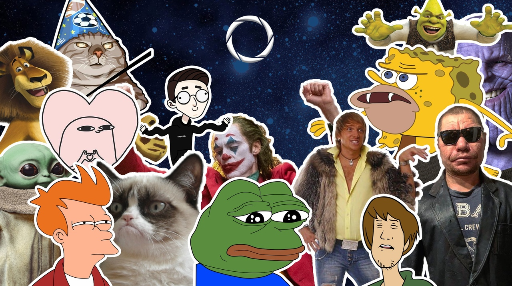

мемы 2022

мемы про людей
 " Это ты? Да, я. Не смеётся над этим мемом только его создательница. Пользовательница bumbumb94244255 опубликовала переписку с парнем перед свиданием. Ухажёр решил сбежать, когда увидел девушку вживую. И смешно, и грустно.
" Это ты? Да, я. Не смеётся над этим мемом только его создательница. Пользовательница bumbumb94244255 опубликовала переписку с парнем перед свиданием. Ухажёр решил сбежать, когда увидел девушку вживую. И смешно, и грустно.
Крутые скелеты. Аватарки из 2010-х всё ещё тренде! В этом году мемоделы вновь зафорсили картинки с крутыми скелетами. В эпоху постиронии картинки с костлявыми бандитами приобрели другой окрас. Мемы потеряли смысл и теперь сопровождаются агрессивными обращениями к пользователю. Это тебе не безобидный мем «ееее рокккк!» из 2016-го. Тут всё серьёзней.
Эй, Богдан. «Я здесь. Эх, Богдан, Богдан, богом дан. Богдан, богом дан. Еее. Я Богдан, я богом дан. Мне бог дал. Я Богдан, я богом дан». Знакомые строчки? Их придумал блогер Денис Сухачёв, более известный как Глад Валакас. На одном из стримов он пытался куда-то дозвониться и попал на линию ожидания. Чтобы не зрители не скучали, Денис спел авторскую песенку, изменив свой голос.
не пойму, в чём мем с отсылками на «Уэнсдей». Флешмоб с фразой «Отслыка на Уэнсдей», скорее всего, запустил, тиктокер @kolobok.bss, который зовёт себя «Император венздей». Он попросил своих зрителей писать эти слова под любыми видео, чтобы затроллить фанатов сериала. Так «Отсылка на Уэнсдей» завирусилась и превратилась в абстрактный мем наподобие Александра Мазепова. Пользователи тиктока повторяли эту фразу в комментариях под рандомными видео, постами и даже в игровых переписках, путая других пользователей Сети.